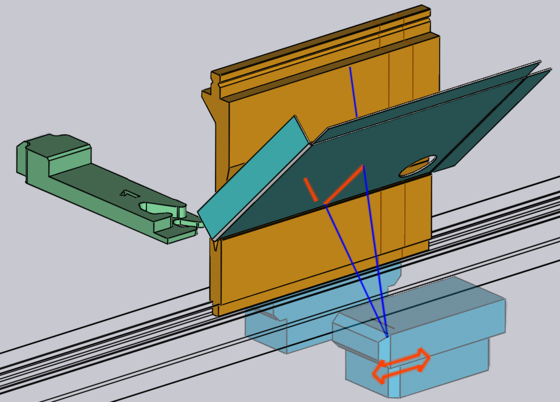

Szögmérés szerkesztése
Ha az élhajlítógép szögmérő rendszerekkel van felszerelve, mint például ACB vagy LCB, akkor a TecZone Bend ezeket használja a hajlítási szögek pontosságának javítására. A Szögmérés oldalon részletesebb információk találhatók erről a folyamatról.
Ez az oldal a lézerbázisú szögmérő eszközökkel végzett szögmérések szerkesztési műveleteit ismerteti. Ha az érintőlap-alapú mérőrendszert használ, akkor úgy szerkesztheti ezeket a beállításokat, hogy az érintőlap-szegmenst tartalmazó bélyegtartóra kattint.
Lézeres ACB szerkesztése
Ha megnyitja az ACB panelt, ahol az ACB beállításokat az alábbi módszerek egyikével szerkesztheti:
-
Kattintson kétszer egy hajlítás számára a navigátorban a hajlítási panel megnyitásához, majd kattintson a Angle Measure gombra (ez csak akkor jelenik meg, ha a gép rendelkezik szögmérő rendszerrel).
-
Kattintson bármelyik cellára a navigátor ACB sorában.
-
Kattintson az ACB érzékelők egyikére, ha azok láthatók (lásd az alábbi ábrát).
A szimuláció során az ACB érzékelők megjelennek, amikor mérési pozícióba kerülnek és leképezik az alkatrészt. A kamera által rögzített tényleges lézervonalak az alkatrészre vetülnek (narancssárga színnel). Ezek a vonalak valós időben is megjelennek és frissülnek, amikor interaktív módon szerkeszti az érzékelők pozícióját. Az interaktív szerkesztés során az egeret az erőső vagy a hátsó érzékelő felett mozgatva néhány kommentár jelenik meg, mint például:

A narancssárga nyomvonalak a lemezen a tényleges elérhető nyomvonalhosszakat mutatják. Az érzékelőre kattintva és azt húzva a vonalak azonnal frissülnek (figyelembe véve a lyukakat, a formázásokat, valamint a matricák vagy ütközők árnyékát). A kék vonalak jelzik a lézeres pásztázás felső és alsó határát (ezek csak addig láthatók, amíg az egér az egyik elülső vagy hátsó érzékelő felett van).
ACB panel

A mellékelt ábra az ACB Panel tipikus kijelzőjét mutatja.
-
Az System választókapcsolóval lehet váltani a lézeres és az érintő lapos mérőrendszer között; csak akkor jelenik meg, ha a gépen mindkét rendszer telepítve van.
-
A Mode*az azonosítási módok egyike, amelyeket a fenti szakaszban tárgyaltunk, a *ACB módszerek oldalon.
-
A Lasers lista segítségével kiválaszthatja, hogy mindkét lézert használni kívánja-e a méréshez (alapértelmezett beállítás). Bizonyos esetekben dönthet úgy, hogy csak az elülső vagy a hátsó lézereket használja. A listában szereplő Mindkettő (ferde) opciót akkor használja, ha mindkét lézert használni szeretné, de az elülső és a hátsó lézert külön kell pozícionálni (lásd az alábbi ábrát)
-
A Position beállítás a lézeres mérés Z pozícióját határozza meg (gépkoordinátákban). Amint ezt megváltoztatja, láthatja, hogy az ACB érzékelő elmozdul, a lézernyomvonal újraszámításra kerül és a navigátorban megjelenhetnek/onnan eltűnhetnek a nyomvonalhosszal kapcsolatos figyelmeztetések és hibák - mindez valós időben.
-
A Trace kijelzőn látható a méréshez rendelkezésre álló lézernyomvonal látható. Az elülső és a hátsó nyomvonalak hossza általában eltérő lehet; ez a kijelző a legrövidebbet jeleníti meg.
-
A Move to measure beállítás szabályozza, hogy az ACB lézerérzékelők mikor mozduljanak a mérési pozícióba. Általában a lépésváltás fázisban kerülnek a helyükre (amikor az előző hajlításról erre váltunk), de ez néha megnehezítheti az alkatrész behelyezését. Ebben az esetben úgy dönthet, hogy az érzékelők csak akkor mozduljanak a helyükre, amikor a bélyeg a hajlítás kezdetén eléri a mute pontot.
-
A After measure beállítás szabályozza, hogy az ACB lézerérzékelők a mérés befejezése után hova mozduljanak. Ha az érzékelőket többé nem használják, akkor általában visszatérnek a parkolóhelyzetükbe; ha viszont szükség van rájuk a következő hajlításokhoz, akkor maradnak a jelenlegi helyzetükben.
ACB minőségi beállítások
-
Az Warning és a Error beállítások küszöbértékek. Ha a mért szögeltérés meghaladja ezeket az értékeket, a vezérlő figyelmeztetést vagy hibaüzenetet jelenít meg a kezelőnek.
-
A ACB Speed módszer felgyorsítja több alkatrész egymást követő gyártását, mivel csak az első alkatrészen méri meg a visszarugózást és ugyanazt az értéket használja az összes következő alkatrészre. Az ACB sebesség opció minden hajlításnál külön-külön aktiválható vagy deaktiválható.

A fenti panel csak egy mérést mutat (a hajlítási vonal hossza túl rövid volt ahhoz, hogy több mérést lehessen végezni). Ha a hajlítási vonal hosszabb, akkor a TecZone Bend több mérést használ. Ekkor a következő képernyő jelenhet meg:
-
Ebben a példában a Lasers beállítást Mindkettő (ferde) értékre állítottuk, így a Position bevitel két részre oszlik és a Front, valamint a Rear pozíciók külön jelennek meg.
-
Az Measures beállítás megjeleníti a végrehajtandó mérések számát; ez az a TecZone Bend által kiszámított optimális értékre van beállítva (a hajlítási hossz alapján). Ebben a példában a TecZone Bend 3 mérést választott, de ezt akár 1-re is le lehet csökkenteni.
-
Az Index csúszka segítségével kiválaszthatja a szerkesztendő 3 mérés egyikét. A csúszka mozgatásával a megfelelő pozíció megjelenik az Első, továbbá Hátsó adatbeviteli mezőkben és szerkeszthető. A szimuláció az érzékelőt is a megfelelő mérési pozícióba mozgatja.